(In)visible Systems: A Digital Poetics of the Body
This project is a series of digital video studies exploring "the body as a data interface." In the new "nature" constituted by algorithms, capital, and industrial logic, the human body has become the ultimate site of inscription,
discipline, and analysis. Through the digital lens—the most important contemporary tool for observation and critique—we examine how the body, in its friction with these invisible systems, serves both as a vehicle for resistance and as a
generator of poetry.
The work constructs a digital "phenomenological laboratory," placing the body in surreal scenarios such as glass cages, data noise, and industrial pipelines, enabling it to have perceptible contact with the violence of the system. These
images are not only records; they are also processes of encoding and decoding: the reflection of the lens, the disintegration of code, and the overlay of projections all become metaphors for the mutual penetration and tampering between
the body and the system.
Ultimately, we ask: in an increasingly virtual world, what new truths about existence and freedom are revealed by the materiality, temperature, and vulnerability of the body?
Human Creator Ledger
The core conceptual framework of this project and the initial textual descriptions of some works were developed and deepened through conversations with AI language models (primarily DeepSeek Chat). AI, acting as a "conceptual sounding
board" and "text generator," assisted me in transforming vague sensory experiences into precise theoretical language and visual imagery.
The collaboration involved iterative dialogues where conceptual ideas were refined, theoretical frameworks were articulated, and descriptions were crafted to capture the essence of each work. This process demonstrates a new form of
artistic collaboration where AI serves as an intellectual partner in the development of critical concepts and artistic statements.
AI Co-Creator Profile
DeepSeek Chat
Negotiation Artifacts
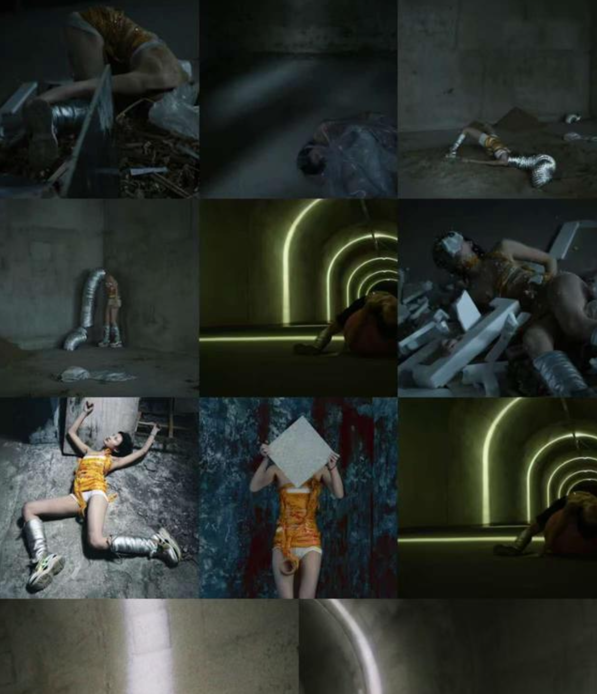
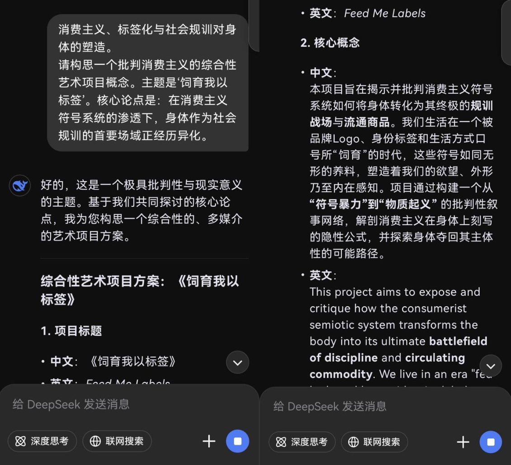
Feed Me With Labels 《饲育我以标签》
Video / Visual Art / Physical / Photography (2025)
AI Model: DeepSeek Chat
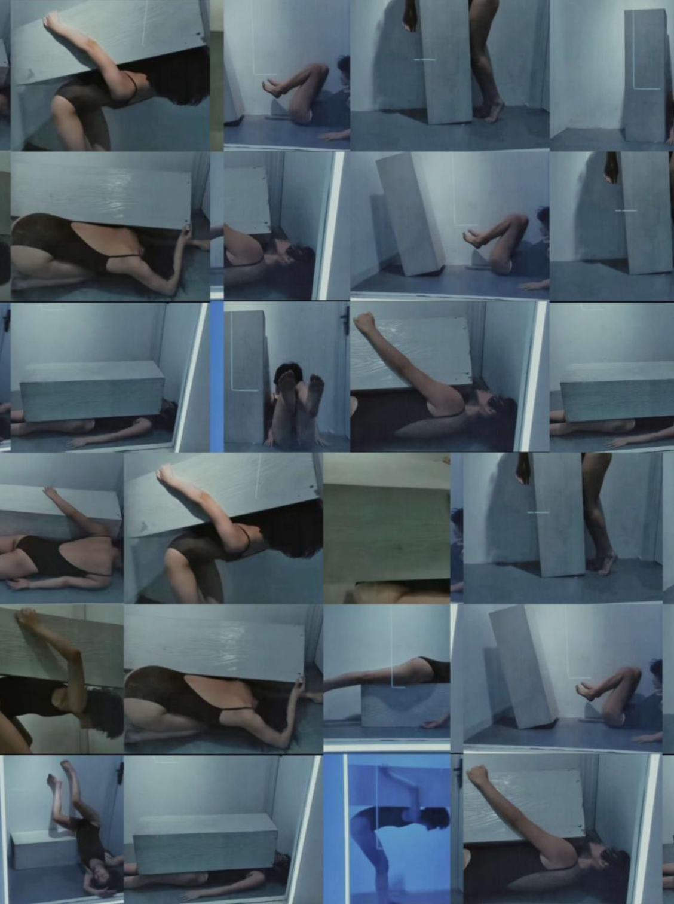
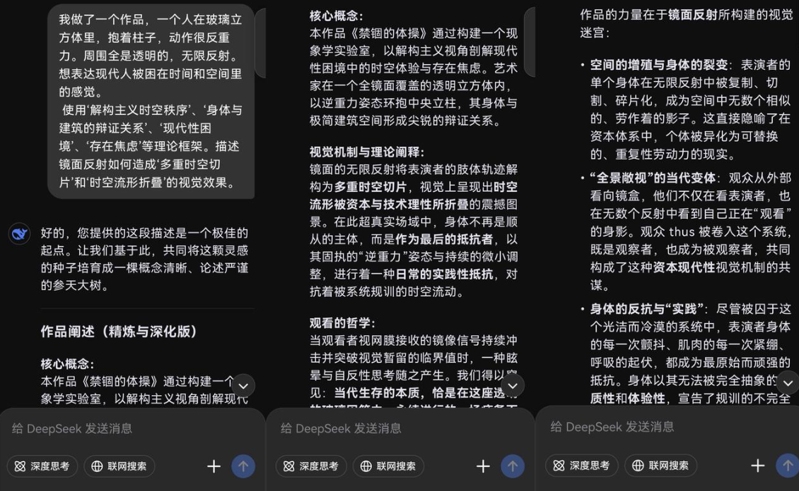
Glass Cage—Time 《玻璃囚笼——时间》
Video / Visual Art / Physical (2024)
AI Model: DeepSeek Chat
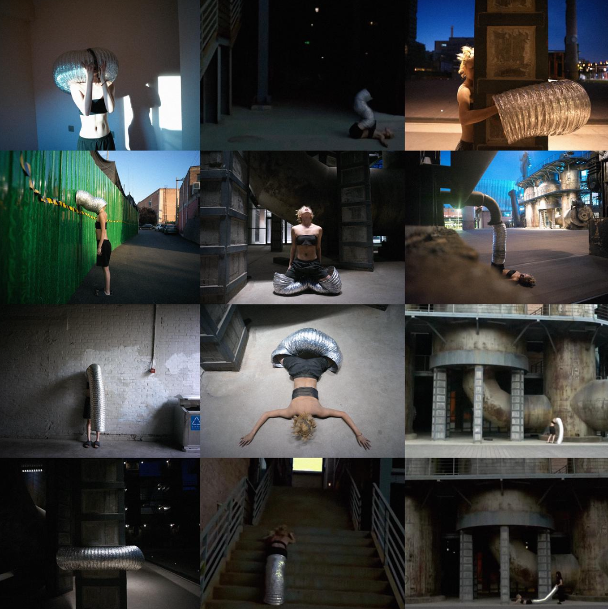
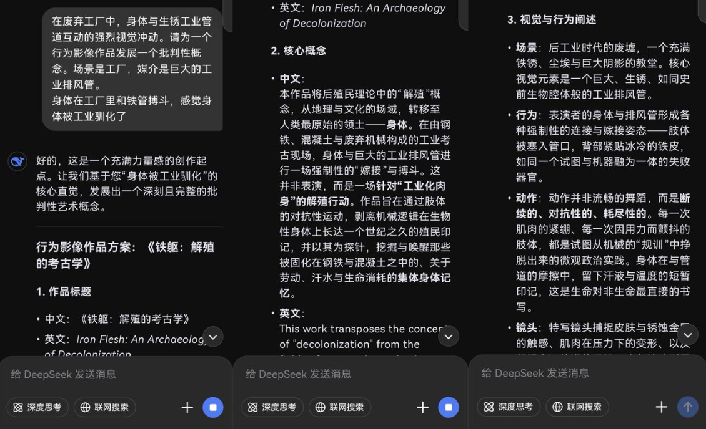
Sirenbanshee404
Visual Art / Video / Performance / Physical (2024)
AI Model: DeepSeek Chat
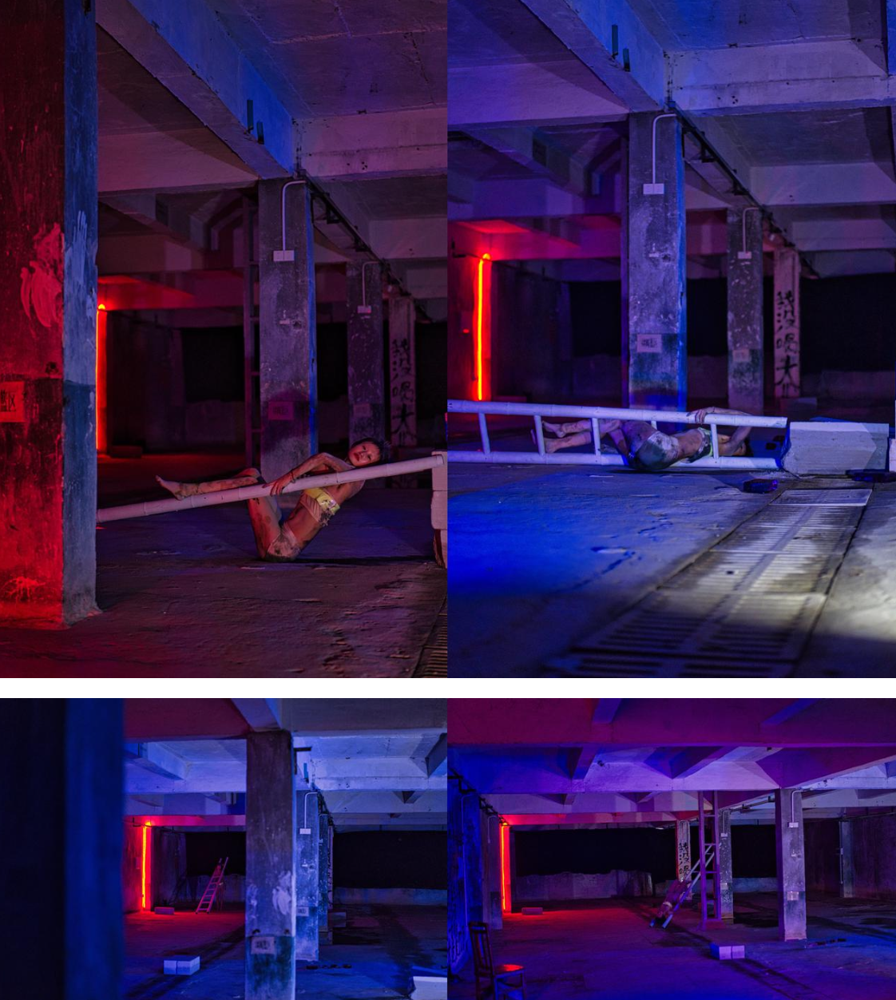
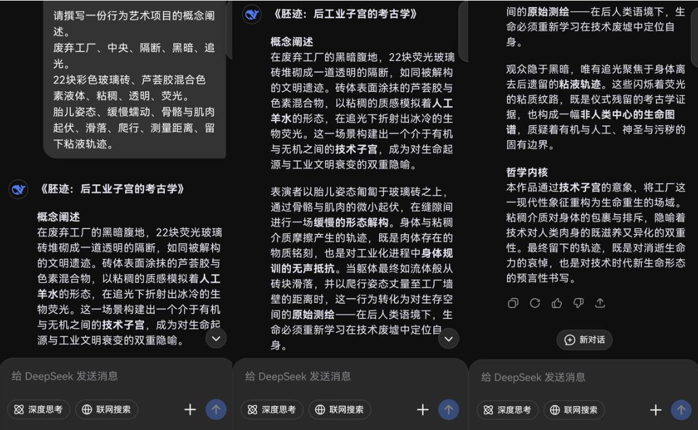
22Hz Chromosome 《22Hz染色体——在荧光中成为实验废料》
Performance / Video / Live Act / Physical (2025)
AI Model: DeepSeek Chat
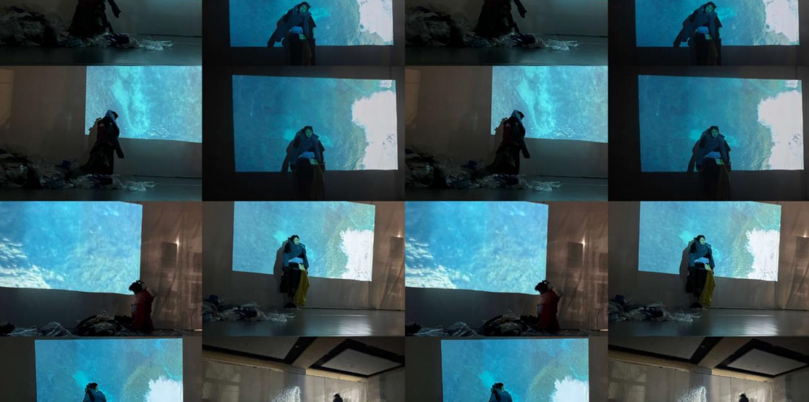
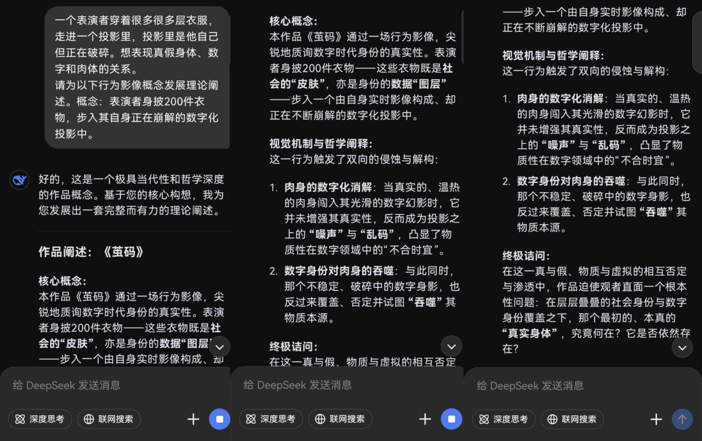
Cocoon Code 《茧码》
Visual / Video / Performance (2025)
AI Model: DeepSeek Chat
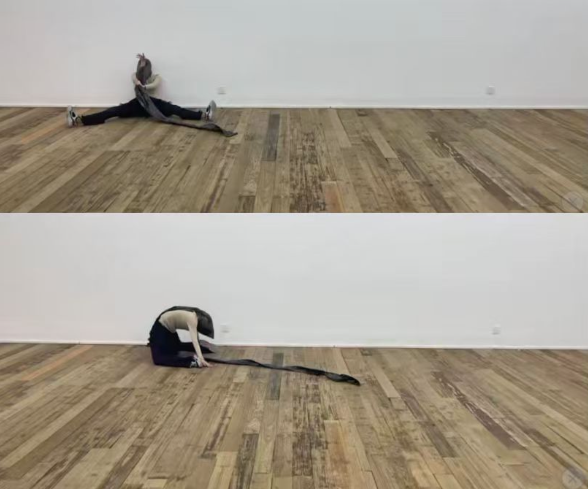
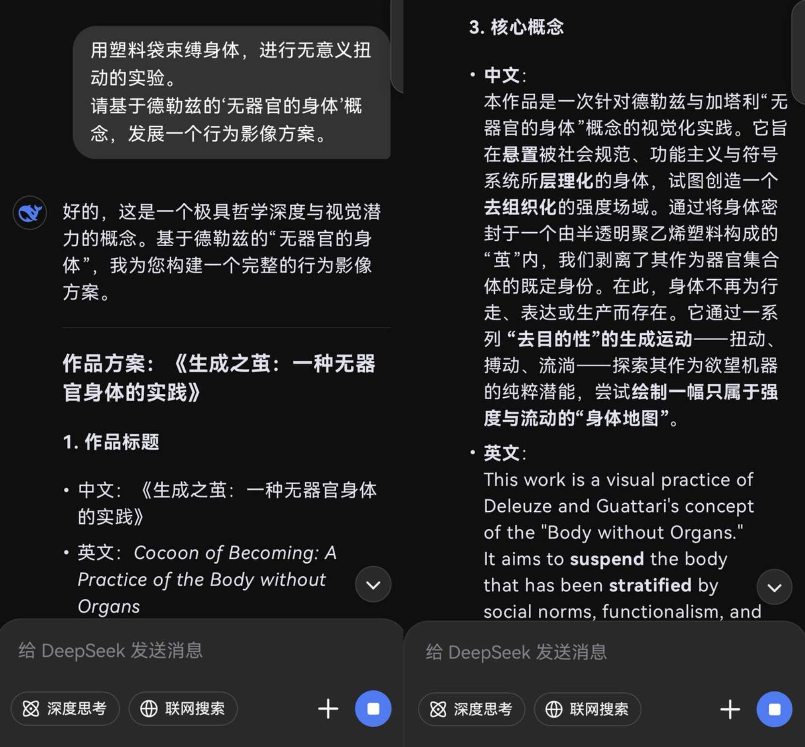
Breathing Without Organs 《无器官呼吸》
Visual / Performance / Video (2024)
AI Model: DeepSeek Chat